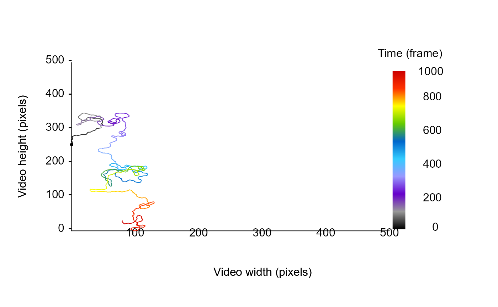

Compute the net square displacement (Turchin 1998) - EXPERIMENTAL !!!.
Source:R/turchinD.R
turchinD.RdGiven a list of data frames containing tracking informations and including the value of turning angles, distance traveled and behavioral states (either active or inactive), this function compute the Net square displacement value used to infer populations spread according to Turchin (1998).
Arguments
- trackDat
A list of data frame containing tracking informations for each tracklet, including a vector containing behavioral patterns (e.g., behavioral states, location in areas).
- turnAngle
A character string indicating the name of the variable specifying the turning angles over each trajectories.
- distTraveled
A character string indicating the name of the variable specifying the distance traveled by the particles.
- behavStates
A character string indicating the name of the variable specifying behavioral states.
Value
this function returns the net square displacement value used to infer populations spread according to Turchin (1998).
References
Turchin, P. (1998). Quantitative Analysis of Movement: Measuring and Modeling Population Redistribution in Animals and Plants. Sinauer.
Examples
# simulate a correlated random walk with known parameter to verify Turchin D computation
## specify some parameters
n = 1000
stepLength = 2
angularErrorSd = 0.5
linearErrorSd = 0.2
angularErrorDist = stats::rnorm(n, sd = angularErrorSd)
linearErrorDist = stats::rnorm(n, sd = linearErrorSd)
## simulate a trajectory
sim <- trajr::TrajGenerate(
n = n,
random = TRUE,
stepLength = stepLength,
angularErrorSd = angularErrorSd,
angularErrorDist = function(x) angularErrorDist,
linearErrorSd = linearErrorSd,
linearErrorDist = function(x) linearErrorDist,
fps = 1)
## convert it to a data frame to allow MoveR computation
sim <- data.frame(
x.pos = sim[["x"]] - min(sim[["x"]]),
y.pos = sim[["y"]] - min(sim[["y"]] ),
frame = sim[["time"]]
)
# take a look at the simulated data (here we use list(sim) because the function expect a list of trajectories)
MoveR::drawTracklets(list(sim), imgRes = c(500,500))

# compute the needed metric on the simulated dataset (here we use list(sim) because the function expect a list of trajectories)
simComp <-
MoveR::analyseTracklets(
list(sim),
customFunc = list(
## compute turning angle in radians over each tracklet (a modulus present within the MoveR package)
TurnAngle = function(x)
MoveR::turnAngle(x, timeCol = "frame", unit = "radians", scale = 1),
## compute distance traveled
distTraveled = function(x)
MoveR::distTraveled(x, step = 1)
)
)
# add behavioral state (consider as active all the time)
simComp[[1]]["behavStates"] <- "active"
# compute the Turchin net square displacement from the simulated data
MoveR::turchinD(
simComp,
turnAngle = "TurnAngle",
distTraveled = "distTraveled",
behavStates = "behavStates"
)
#> [1] 32.37223